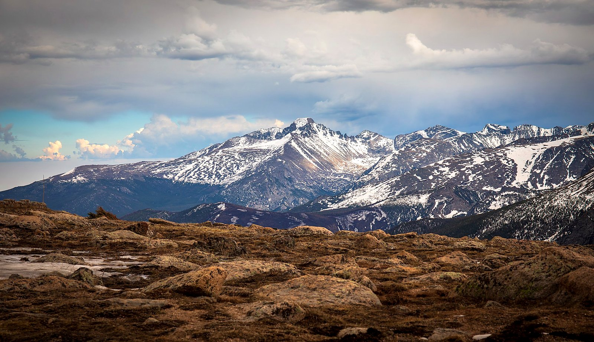
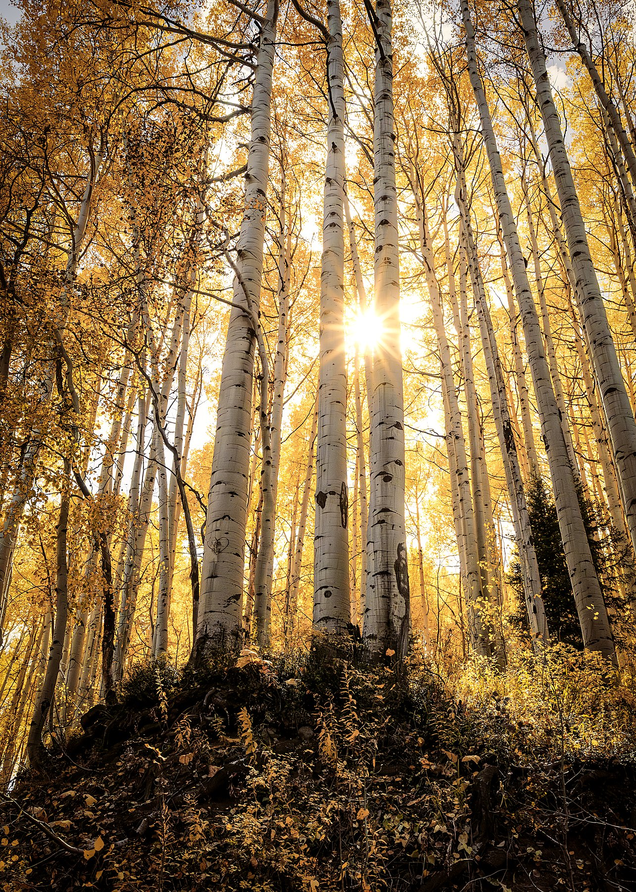
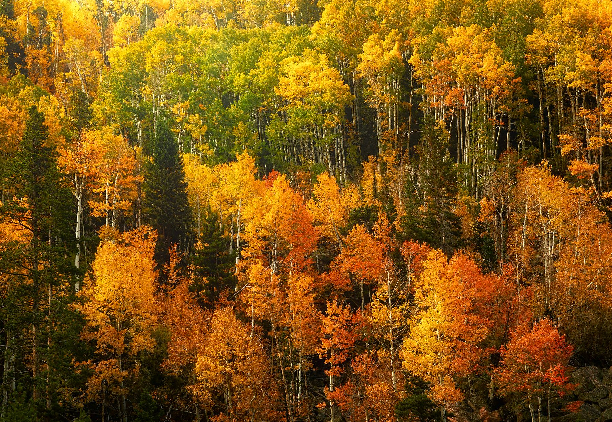
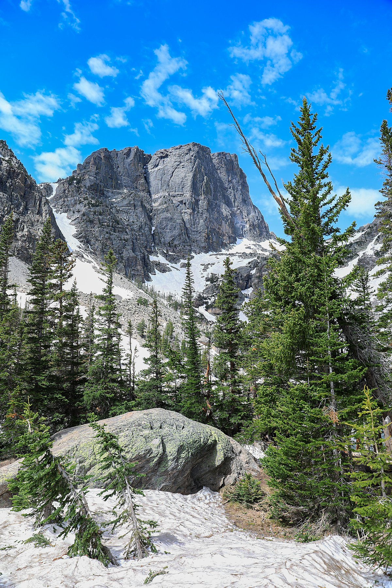

Museum-quality fine art prints from Colorado's most spectacular landscapes — Bear Lake, Rocky Mountain National Park, Maroon Bells, Trail Ridge Road, and the blazing autumn aspen forests. Canvas, metal, acrylic, and framed.
Colorado delivers some of the most dramatic autumn color in North America, and Dan has photographed it extensively — hiking to remote locations to find aspen groves at peak gold, arriving before dawn at Maroon Bells to catch the reflection in the still lake, and driving Trail Ridge Road above 12,000 feet to photograph tundra landscapes that feel like another planet.
Rocky Mountain National Park alone has taken him back a dozen times. Bear Lake in peak autumn — with its mirror-still water reflecting walls of orange and red — is one of the most stunning natural spectacles in the American West. These are not drive-by shots. They represent hours of patient hiking, waiting for the light, and deep respect for these wild places.
"Colorado in peak autumn is one of those natural events that makes you understand why photography exists. The aspens turn in waves up the mountainsides — one canyon is green while the next is solid gold and red."
Dan Sproul, Lima, Ohio — sproulphoto@gmail.com
Locations in this collection
Rocky Mountain National Park Collection
Dan has hiked and driven every corner of RMNP across multiple seasons. These are his finest images from the park.

Bear Lake — Autumn Reflection
Rocky Mountain National Park — All Media

Trail Ridge Road — RMNP Tundra
12,000 ft Above Sea Level — Canvas and Metal

Bear Lake Road — Autumn Aspens and Peaks
RMNP — All Media

Emerald Lake — Rocky Mountain National Park
RMNP — Canvas and Framed
Maroon Bells & Aspen Collections
Maroon Bells at first light and the sunlit aspen groves of the Elk Mountains — two of Dan's most-requested print subjects.

Maroon Bells at Dawn — Colorado
Best Seller — All Media Available

Sunlit Aspen Grove — Colorado
Vertical — Canvas and Framed

Colorado Autumn Aspen Forest
Peak Fall Color — Wide Format

Maroon Bells Autumn Sunrise — Framed
Silver Metal Frame — 24x16
Colorado's Dramatic Geology
From the vivid red sandstone spires of the Front Range to the rugged peaks of the San Juan Mountains.

Chimney Peak — San Juan Mountains
Autumn — Canvas and Metal

Garden of the Gods — Colorado Springs
Black Float Frame — All Media

Rocky Mountain Peak — Colorado
RMNP — Statement Size
Premium cotton gallery-wrapped. Ready to hang immediately.
Archival paper in white, silver, dark wood or black frames.
Dye-infused aluminum. Vivid, waterproof, frameless.
Face-mounted crystal clarity. Gallery-grade depth.
Where specifically were these Colorado photographs taken?
Dan has photographed extensively throughout Colorado — Rocky Mountain National Park (Bear Lake, Emerald Lake, Trail Ridge Road, Bear Lake Road), the Elk Mountains around Aspen (Maroon Bells), the San Juan Mountains (Chimney Peak and surrounding peaks), and Garden of the Gods near Colorado Springs. He returns multiple times per year specifically to photograph peak autumn color, which typically runs mid-September through mid-October.
When is the best time to see Colorado's autumn colors?
Peak autumn color in Colorado typically occurs between mid-September and mid-October, varying by elevation. Higher elevations like Trail Ridge Road and the tundra areas turn first (early September), while Bear Lake and the valley aspen groves peak later in September. The Maroon Bells area near Aspen often peaks in late September. Dan times his trips specifically to chase this window, sometimes visiting multiple times in a single season.
What sizes are Colorado prints available in?
All Colorado images are available from 8x10 up to 40x60 inches and larger. The Maroon Bells, Bear Lake reflection, and Bear Lake Road images are particularly stunning at large sizes — 30x20 and above. Custom sizes for commercial and interior design projects are available. Email sproulphoto@gmail.com for a direct quote.
Do Colorado prints ship worldwide?
Yes — prints ship to all 50 US states and over 21 countries. Orders are fulfilled through Dan's partner print lab at dansproul.com with a full satisfaction guarantee on every order.
Are Colorado prints available for commercial or hospitality use?
Absolutely. Dan works directly with interior designers, architects, hotels, and medical facilities on large commercial installations. Recent projects include Drury Inn hotels and the Wexner Medical Center at Ohio State University. Contact sproulphoto@gmail.com for trade pricing and commercial quotes.
Every image available as museum-quality canvas, metal, acrylic, and framed prints.
Ships worldwide — Satisfaction guaranteed — Custom sizing available
sproulphoto@gmail.com